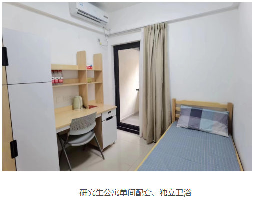
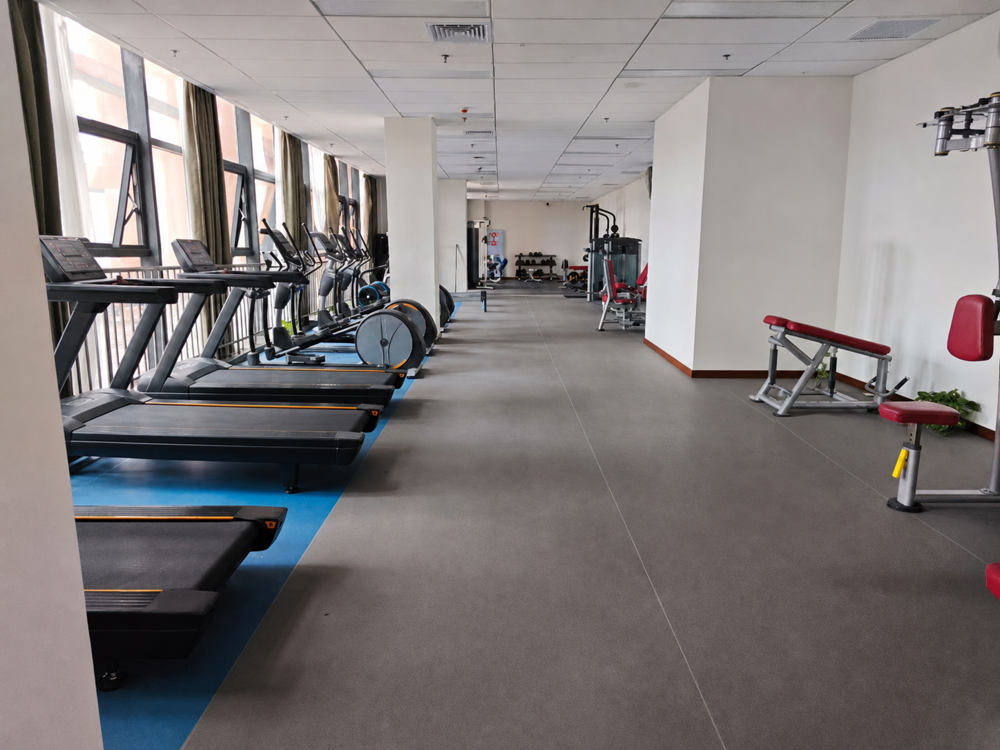
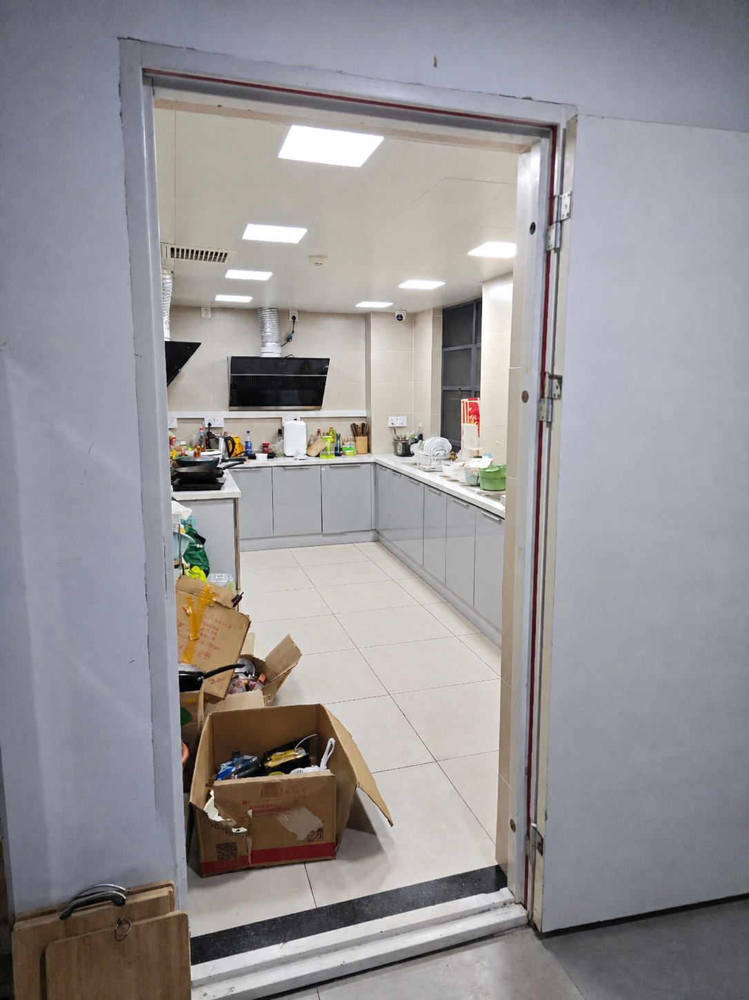

11408 → 22408
2026 年计算机技术方向改考 22408。总分线 290，政治、英语单科线 35，数学、专业课单科线 53。
CAS · CIGIT / 2026
中国科学院重庆绿色智能技术研究院招生数据、复试情况与培养生活信息。
ADMISSION
目录拟招、实际录取与成绩信息
| 年份 | 初试科目 | 目录拟招 | 录取口径（含保研） | 推免 | 一志愿 | 调剂 | 成绩信息 |
|---|---|---|---|---|---|---|---|
| 2026 | 22408 | 11 | 实际 17 | 6 | 22 进复试，11 统考拟录取 | — | 分数线 290；录取 302–401 |
| 2025 | 11408 | 11 | 实际 21 | 6 | 8，全部录取 | 7 | 考研平均分 289 |
| 2024 | 11408 | 12 | 实际 15 | 5 | 6，全部录取 | 4 | 考研平均分 304 |
| 2023 | 11408 | 9 | 实际 16 | 2 | 4，全部录取 | 10 | 考研平均分 294 |
2026 年计算机技术方向改考 22408。总分线 290，政治、英语单科线 35，数学、专业课单科线 53。
复试无笔试、无机试，面试问题主要围绕个人简历与项目经历。
2026 年，332 分以上未出现淘汰。
COHORT
985、211、双非均有录取，包含计算机相关专业和跨考生。
SUPPORT
各年级每月补贴
CAMPUS LIFE
单人间宿舍、独立卫浴，配有免费健身房与公共厨房。



CAREER
硕士毕业生就业去向
中国科学院、中国电科、核动力院、重庆市设计院、之江实验室、长江科学院、国家生猪创新中心
清华大学、上海交通大学、浙江大学、南京大学、华中科技大学、哈尔滨工业大学、北京航空航天大学、南开大学、中山大学、东南大学、香港科技大学、早稻田大学、柏林工业大学、亚利桑那大学
江西省委组织部、眉山市委组织部、巴中市委组织部、广安市委组织部、宜宾市委组织部、达州市委组织部、中国地质调查局、北京经开区管委会
中石油、中国移动、中铁集团、招商银行、南方电网、国家能源、国家电投、中兴通讯、中芯国际、京东方、长江存储、中国电子集团、中国航发、长安集团、国机重装
华为、比亚迪、科大讯飞、大疆、赛力斯、小米、腾讯、武汉华星光电、长鑫集电、新思半导体、网易、引望、海康威视
大部分学生完成毕业要求后，导师放实习。